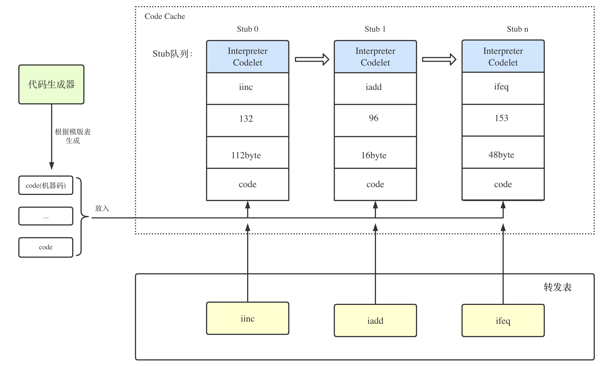

解释执行
[toc]
Java 源程序经编译后称为字节码，由运行时环境对字节码进行解释执行。提供解释功能的JVM组件称为解释器
解释执行可以与CPU的处理过程进行类比，CPU就是在重复进行着“取指-译码-执行“这一操作，并在这个过程中完成了一条条指令的执行，实现了程序规定的任务，解释器就类似于CPU这个角色，也在不断的“取指-译码-执行”，下文将介绍HopSpot VM解释器的分类与组成，并详细介绍s解释器的运作流程
1、解释器的分类与组成
从译码的角度，可以将HotSpot实现解释器分为C++解释器与模版解释器两种，顾名思义，C++解释器是将字节码“译码“成C++代码，这其实很好理解，毕竟HotSpot本身就是用C++实现的；而模版解释器则是将字节码“译码“成了机器码，这也是目前HotSpot目前的默认解释器
1.1 C++解释器
对于C++解释器而言，是将字节码译码成C++代码，那么在执行性能上应该是不如译码成机器码的
比如在寄存器分配上时，手写汇编在这种很小范围很细节的地方能有效的、精确的控制寄存器的使用，保证不会浪费寄存器
而C++编译器不一定能完美的选择到最好的寄存器分配方式。在比较大规模的代码里编译器可能比手写做得好，因为人能在脑子管理好的复杂度也是有限的；但小规模代码的精确控制通常还是人做得好些。
那按理来说，模版解释器应该是C++解释器的升级版(很多博客和书籍中都是这么描述的)，但是并不是，在@RednaxelaFX的豆瓣笔记中翻到了这样一段关于这两类解释器由来的历史，还挺有意思的
其实HotSpot从一开始就有模板解释器，而C++解释器反而是后来加进来的。前者源于HotSpot的前身Strongtalk，而后者源于Sun的另一个JVM(CVM)，又名“CDC HotSpot Implementation”或者“CDC-HI”。CVM更早的前身是Sun的Classic VM。 也就是说，这俩解释器没有任何血缘关系，前者并非将后者翻译为汇编。当时Sun之所以把后者加到HotSpot是在实现Itanium（IA-64）的移植时想偷懒，人肉写Itanium汇编挺烦的所以要实现Itanium版模板解释器不方便，他们就想到了把CVM的解释器移植过来，这样可以少写点汇编就能完成移植。结果一直以来HotSpot能运行的平台上只有Itanium版是真的用了这个C++解释器的，而其它平台上默认都在用模板解释器，但还是可以通过编译参数选择使用C++解释器。```
1.2 模版解释器
模板解释器相对于为每一个字节码指令都写了一段实现对应功能的汇编代码，在JVM初始化时，汇编器会将汇编代码翻译成机器指令加载到内存中，比如执行iload指令时，直接执行对应的汇编代码即可。如何执行汇编代码？直接跳往汇编代码生成的机器指令在内存中的地址即可。
1.2.1 模版解释器的组成
1.2.1.1 模版表
JVM初始化时会为每个字节码指令都创建一个模板，每个模板都关联其对应的汇编代码生成函数，所有字节码的模版组合在一起，构成一个模版表。表中每个元素都是一个模版，元素按照字节码值的递增顺序排列，第n号元素表示的就是字节码为n对应的模版
我们平时说的iload指令等，其实都只是字节码指令的助记符，帮助我们理解，真正的字节码码指令其实就是一个数字，比如iload是21，虚拟机执行21这个指令时，就是执行iload
以下这段代码就是模版的汇编代码生成函数
void Template::generate(InterpreterMacroAssembler* masm) {
// parameter passing
TemplateTable::_desc = this;
TemplateTable::_masm = masm;
// code generation
_gen(_arg);
masm->flush();
}
1.2.1.2 机器码生成器
在JVM启动时，代码生成器将统一为字节码以及JVM内部例程生成机器码，对于字节码来说，就是在模版表里找到字节码对应的模版，然后根据汇编代码生成函数生成代码，具体到源码层面，机器码生成器就是个C++类TemplateInterpreterGenerator,通过它的generate_all()函数生成代码
在JVM中，所有由代码生成器生成的代码都由一个Codelet来表示，面向解释器的Codelet称为InterpreterCodelet，通过这些Codelet来完成在JVM内部存储、定位和执行代码的任务
每个InterpreterCodelet具有名称和字节码编号，并能够找到机器码在JVM内存中的起、止地址
class InterpreterCodelet: public Stub {
private:
int _size; // the size in bytes
Bytecodes::Code _bytecode; // associated bytecode if any
public:
// Code info
address code_begin() const { return (address)this + round_to(sizeof(InterpreterCodelet), CodeEntryAlignment); }
address code_end() const { return (address)this + size(); }
为了方便管理，在解释器中，每个InterpreterCodelet并不是孤立的，它们共同构成了一个Stub队列
刚开始学这块时，总是分不清Stub是个什么东西，明明队列里放的s是Codelet还要叫Stub队列（博客和书籍里），后面看了上面那段源码，原来Stub就是个父类，此外，Stub有个意思是“一小块代码”，通常是有个caller要调用callee的时候，中间需要一些特殊处理的逻辑，就会用这种“小块代码”去做，它们并不是最终的调用目标，而是做一些简单的处理之后“跳”到真正的目标去。

1.2.1.3 字节码模块
字节码模块主要承担了两个职责，一是维护了一张字节码表来提供索引服务，其他模块利用字节码编号从表中相应位置取得字节码信息；二是提供了一个“取码”方法，可以根据方法和偏移量获取字节码的函数(与上文的“取指”过程不是一个东西)
首先看字节码表，在JVM启动时会执行一次初始化工作，将创建一张字节码表并将所有字节码的属性逐一填好，这里指的属性包含以下几项：
- 字节码（数字）
- 字节码助记符，如“
iconst_0”等 - 字节码执行结果类型，这些类型来自HotSpot内部定义的基本数据类型BasicType,包括
T_BOOLEAN、T_CHAR、T_FLOAT、T_DOUBLE、T_BYTE、T_SHORT、T_INT、T_LONG、T_OBJECT、T_ARRAY、T_VOID、T_ADDRESS和T_NARROWOOP等 - 扩展指令格式(wide format)
- 指令长度
其中唯一不太好理解的就是扩展指令格式（wide f），下面是源码中定义的两条字节码
// bytecode(定义好的常量) bytecode name format wide f. result tp stk traps
def(_iload , "iload" , "bi" , "wbii" , T_INT , 1, false);
def(_iinc , "iinc" , "bic" , "wbiicc", T_VOID , 0, false);
字节码的指令是单字节的,对于局部变量来说,最多容纳256个局部变量 wide指令就是用于扩展局部变量数的 ,将8位的索引在扩展8位,也就是16位 最多65536 wide 要被扩展的操作码比如iload 操作数 (wide iload 257 也就是 wide iload byte1 byte2), 则格式记为“wbii” wide 要被扩展的操作码比如iinc 操作数,操作数 （wide iinc 257,257 也就是 wide iinc byte1 byte2 constbyte1 constbyte2 ，则格式记为 “wbiicc”
再看“取码”功能的实现，解释器在执行的时候，往往（并不包括文章开头说的“取指”）要根据字节码偏移量（bytecode index，缩写为bci）获取在该方法内(这点要特别注意)指定位置的字节码，这个过程就是我们说的“取码”（fetch bytecode）
在字节码模块中提供了一个code_at()函数来对“取码”进行实现，该函数可以根据方法对象（methodOop）和bci进行取码
Bytecodes::Code Bytecodes::code_at(Method* method, int bci) {
return code_at(method, method->bcp_from(bci));
}
...
address Method::bcp_from(int bci) const {
...
address bcp = code_base() + bci;
...
return bcp;
}
函数code_at()首先得到该方法对应字节码流在JVM内存中的基地址code_base，接下来根据bcp = code_base() + bci计算得到字节码指针（byte code pointer,缩写为bcp）地址；最后访问bcp指向内存的指针，即得到目标bytecode，完成“取码”，具体流程如下图：

1.2.1.4 转发表
同样是在JVM的启动过程中，将会创建一张转发表(DispatchTable)，转发表是连接字节码和机器码的桥梁，记录了字节码以及其对应的机器码的入口地址(entry_point)，这样在JVM需要使用该字节码的机器码时，只用通过转发表就能跳过去执行了

1.2.2 模版解释器的运作过程
在了解了模版解释器的组成之后，它的运作过程也比较清晰了，结合着“取指-译码-执行“这一循环操作，各个模块间是这么交互的：

再次回到解释器的主循环“取指-译码-执行“，思考一个问题，CPU是如何不断的执行指令的，是有一个统一的管理者，不断的取出下一条指令执行吗，其实不是的，当代码段被加载到内存后，会放到连续的一块内存区域，每条指令都是线性排在一起的。CPU利用CS:IP寄存器来记录当前指令地址，因为指令都是连续排在一起的，所以当执行完一条指令后，直接根据当前指令长度进行偏移，就可以拿到下一条指令地址，送入IP寄存器，从而实现连续不断的取指。
HotSpot借用了这一思想，在每个字节码指令对应生成的机器码末尾，会插入一段跳转下一条指令的逻辑。这样当前字节码在完成自己的功能后，就会自动取出方法体中排在它后面的下一条指令开始执行
具体逻辑在机器码生成器中的一个方法generate_and_dispatch（）中：
void TemplateInterpreterGenerator::generate_and_dispatch(Template* t, TosState tos_out) {
......
// generate template
t->generate(_masm);
// advance
if (t->does_dispatch()) {
#ifdef ASSERT
// make sure execution doesn't go beyond this point if code is broken
__ should_not_reach_here();
#endif // ASSERT
} else {
// dispatch to next bytecode
__ dispatch_epilog(tos_out, step);
}
}
可以看到，根据模版生成了对应机器码之后generate(masm),还会调用 _ dispatch_epilog(tos_out, step)方法来生成跳转到下一条字节码对应机器码的入口地址，再看具体的实现：
void InterpreterMacroAssembler::dispatch_next(TosState state, int step) {
load_unsigned_byte(rbx, Address(_bcp_register, step));
// advance _bcp_register
increment(_bcp_register, step);
dispatch_base(state, Interpreter::dispatch_table(state));
}
load_unsigned_byte（）会根据当前指令地址偏移，获取下条指令地址，并通过地址获得指令,放入rbx寄存器
_bcp_register就是rsi寄存器，HotSpot利用rsi寄存器来存储当前指令地址。
取指完成后，调用increment(_bcp_register, step)来更新rsi寄存器，使其指向下一条指令地址。
dispatch_base就是根据转发表跳转的逻辑，Interpreter::dispatch_table(state)即返回了之前生成的转发表